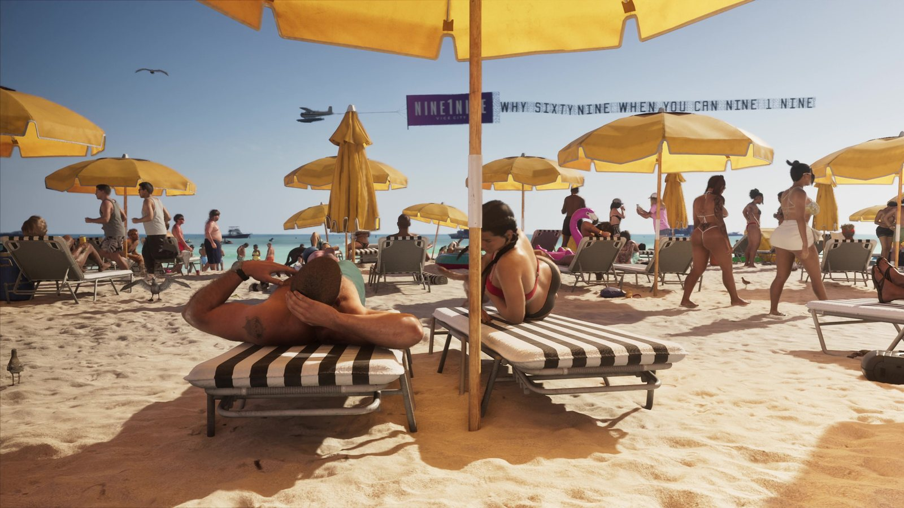
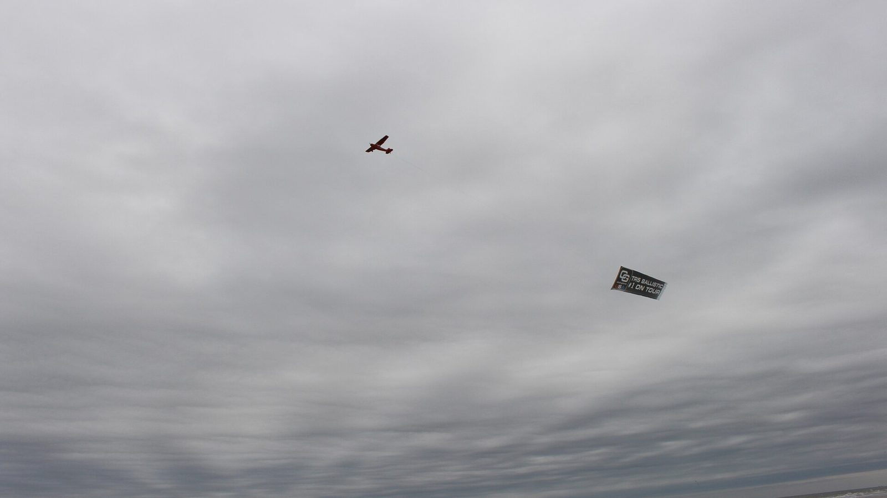
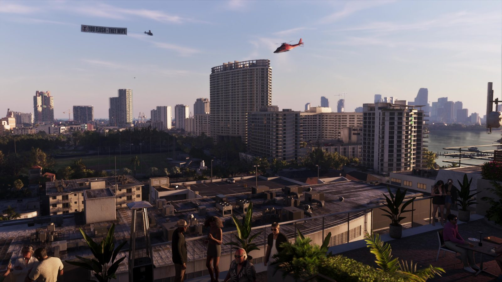

Самолёты с баннерами над пляжами Флориды
Опубликовано:
Маленький самолёт с длинным рекламным баннером над пляжем — обычная картина побережья Флориды. Рекламу на баннере Rockstar придумала сама.


- В «Расширенном показе» над пляжем Вайс-Сити летит гидросамолёт и тащит баннер NINE1NINE · VICE CITY с длинной строкой букв.
- На другом кадре самолёт с баннером пролетает над городом рядом с вертолётом.
- Над пляжами Флориды баннерная реклама — привычное дело.
- Баннер самолёт подхватывает с земли крюком на лету.
Что в игре
Пляж Вайс-Сити: жёлтые зонтики, полосатые шезлонги, загорающие. В небе пролетает пеликан, а за ним гидросамолёт на поплавках тянет фиолетовый баннер NINE1NINE · VICE CITY и длинную строку букв с рекламным слоганом. В другом эпизоде над городом такой же самолёт с баннером летит рядом с вертолётом.

Что в реальности
Самолёты с баннерами — часть пейзажа флоридских пляжей: рекламируют клубы, бары, распродажи, иногда в небе делают предложение руки и сердца. Баннер не цепляют к самолёту на земле. Его раскладывают у взлётной полосы, к нему крепят трос длиной 85–90 м, а петлю троса натягивают между двумя шестами высотой около 2 м. Пилот взлетает, заходит низко над шестами и подхватывает петлю крюком, который свисает из-под хвоста. Затем резко набирает высоту, и баннер поднимается с земли. Для молодых пилотов это ещё и способ набрать лётные часы.
В Майами-Бич самолётам уже появилась замена. В 2023 году компания Sustainable Skylines получила первое в США разрешение FAA на коммерческую буксировку баннеров дронами и начала рекламные полёты над пляжами Майами.
Совпадает и отличается
| Флорида | GTA 6 | |
|---|---|---|
| Самолёт с баннером над пляжем | Да | 🟢 Да |
| Тип самолёта | Обычно лёгкий одномоторный | 🟡 Гидросамолёт на поплавках |
| Реклама на баннере | Реальные бизнесы | 🔵 NINE1NINE (вымышленная) |
| Баннеры над городом | Да | 🟢 Да |
Источники: Rockstar Games («Расширенный показ» GTA 6); GBH News — как самолёты поднимают баннеры (2022); Flying Magazine — дроны с баннерами над Майами-Бич (2023).
Реальные фото: Фото: Michael Rivera, CC BY-SA 4.0 · Wikimedia Commons. Кадры игры: Rockstar Games.
Разборы кадров, слухи и факты за 30 секунд. Подписывайтесь:
YouTubeInstagramTikTok
 vs
vs
 vs
vs
 vs
vs